STANTON ( スタントン）
アメリカのオーディオメーカー。「ピカリング」と密接な関係にある、カードリッジ等のブランド。ただし近年はＤＪ関連機器にやや特化している。
1970年頃の代理店は「河口無線」、1975年頃は「パイオニア・エンタープライズ」、1981年頃には「三洋電機貿易」。「三洋電機貿易」時代には値下げが行われた。1985年8月からは「�潟Aーク」が、1989年頃には「�潟mア」と変遷して、1999年時点で兄弟ブランドである「ピカリング」と同じ「東志�梶vとなった。なお2000年頃にはオーディオ用ではなくDJ用の製品となっていた。業務用途ではモリダイラ楽器での扱いもあったようだ。
�T.カートリッジ
1.MI型
ピカリングと同様に1970〜80年代中盤まではMI型を主力としていた。なお後年（1990年代）のモデルには「IM」と表記されているモデルがあるが、構造等が不明であり、当サイトではMI型として扱う。
�@680/681系
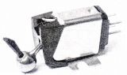
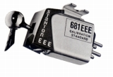
(左 681EE 右 681EEE)681EE 681A 681SE 681T 681EEE 681EEE-S
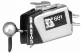
(681EEE MK�V）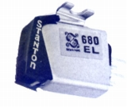
(680EL)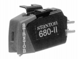
(680EL�U)680AL�U-X 680EL�U 680EL�U-X 680HP
�A600系
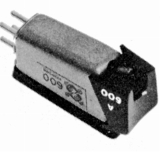
(600A)�B700系
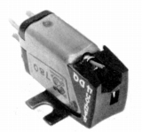
(780/4DQ)2.MM型
1970年代は入門機である500系モデルがMM型であったが、1970年代末の881Sから次第に上級機もMM型となっていった。ピカリングと同様にMC型並みの低インピーダンス機種がある。
�@500系
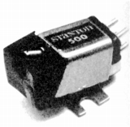
(500EE)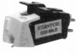
(500AL�U)�A800系
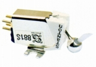
(881S)�B900系
MC型並みの低主力のローインピーダンス型。
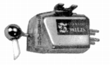
(981LZS)�CHZ、LZ系
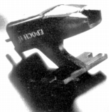
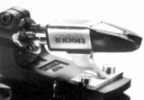
（左 HZ8S 右 LZ9S)�CDiscmaster/Groovemaster
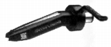
(Discmaster)Discmaster Trackmaster�U Groovemaster AL Groovemaster EL Groovemaster AL LE
Trackmaster�U-SK Groovemaster EL�U-RM Diskmaster AL
�Dその他
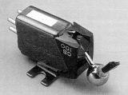
(W.O.S100)3.モリダイラ楽器扱いの機種
2000年版の業務用機器カタログに記載の機器を紹介する。一部（680HP、Trackmaster�U-SKなど）は東志�活ｵいのものと重複するが、独自の機種もあったようだ。なおこれらについては価格以外のスペック・様式はわからない。
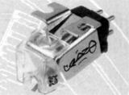
(520SK)